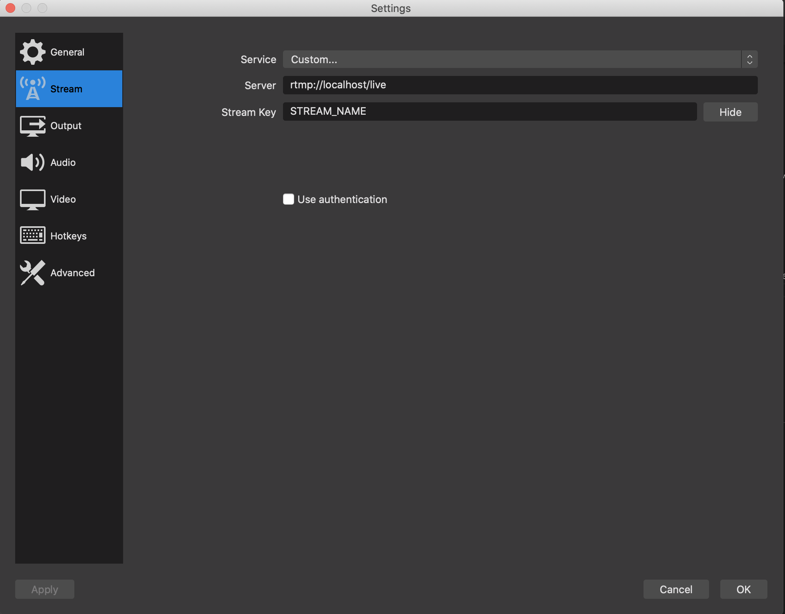
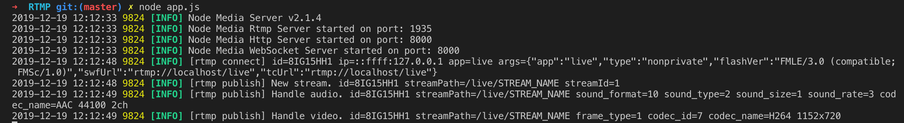

Prerequisites
Install the last version of
Node
Open Broadcaster Software
OBS is an open-source software used for
video recording and live streaming. It will be used to push the RTMP source of your webcam to the
RTMP server.
Step 1: Install OBS.
Step 2: OBS settings.
In the main page, add your webcam to Sources tab by clicking on the add button and
selecting Video Capture Device.
Then, click on Settings and select Stream.
Change the default values by the values in the following image.

Click on ok to save the configuration.
Node Media Server
Node Media Server is a Node.js
implementation of RTMP Media Server. Other protocols are available through this library.
This server was chosen for the demonstration because it can be run whether on MacOS or Linux.
To start the server, run the following line in the folder where
app.js is located:
node app.js
Note: Node Media Server is not the most famous solution for the RTMP Server. You can
use
Arut's project which is based on a nginx
server and really simple to implement.
Nevertheless, it will not be easily portable on MacOS as it needs libraries which are not available on
this OS.
Start Streaming
Go back to
OBS and click on
Start Streaming.
If you followed each step, in your RTMP server terminal you can see the following lines:
